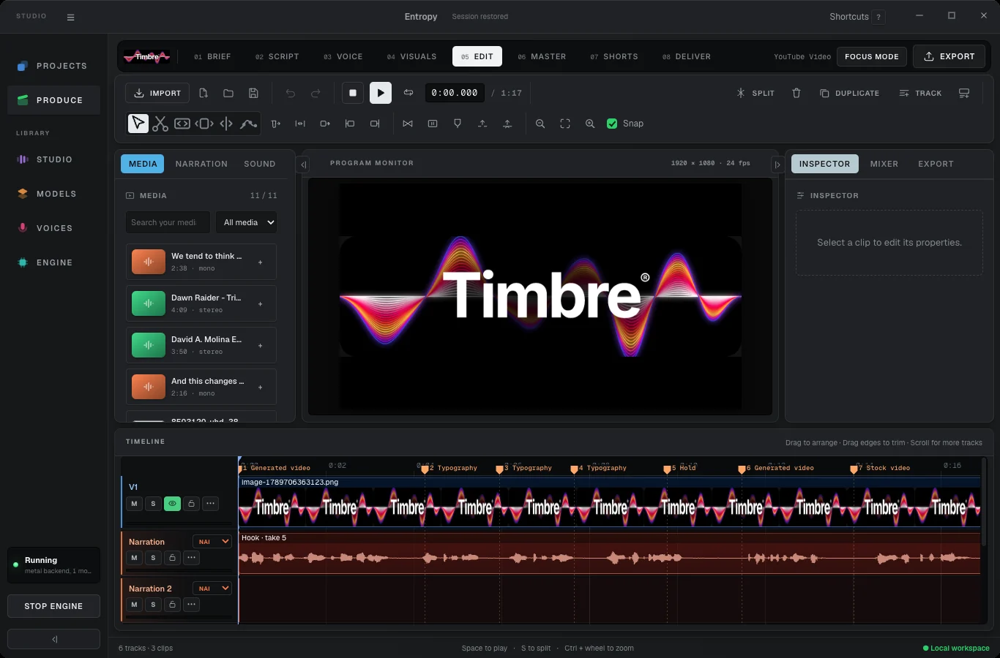
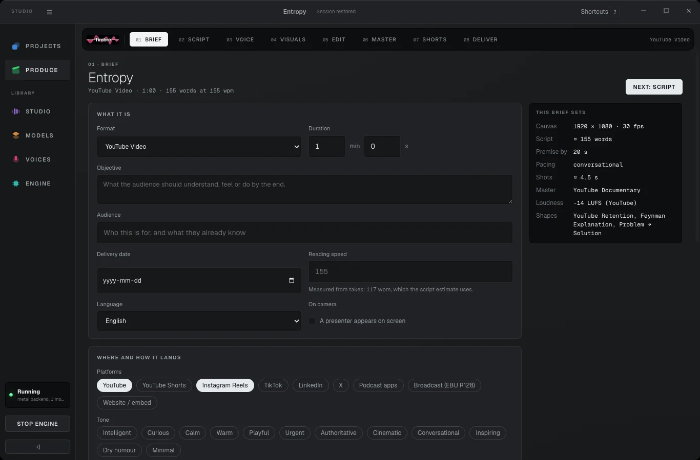
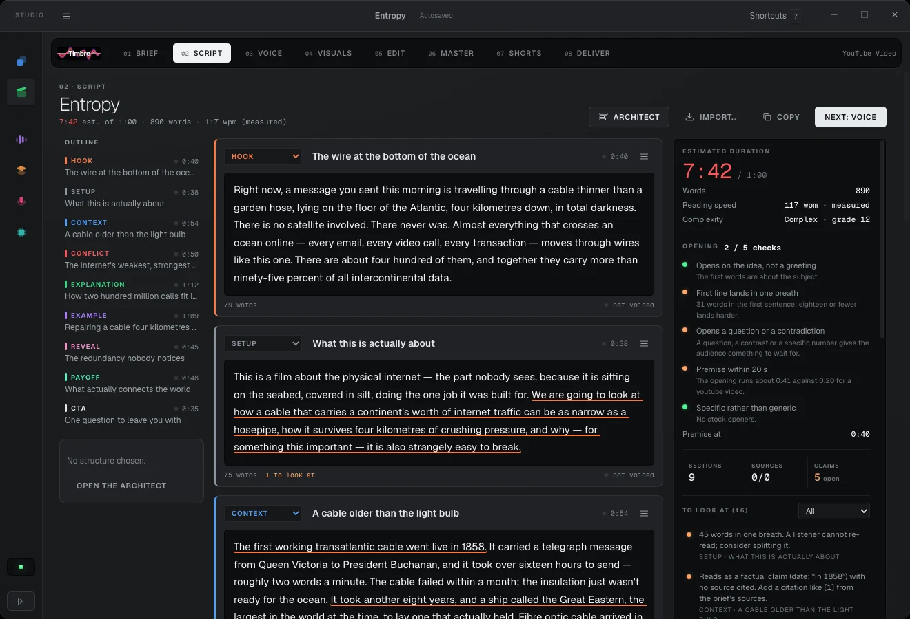
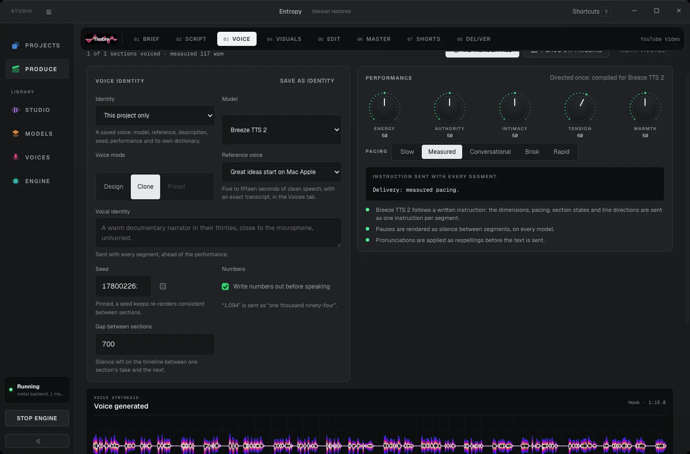
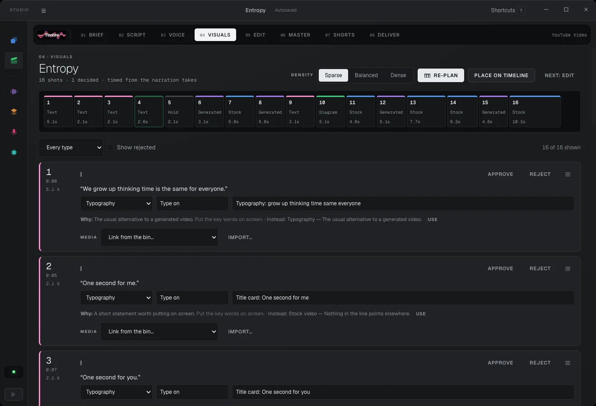
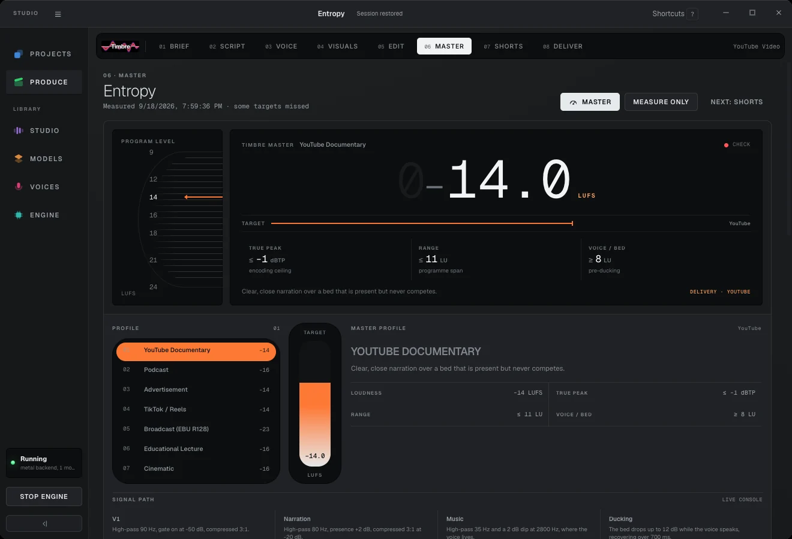
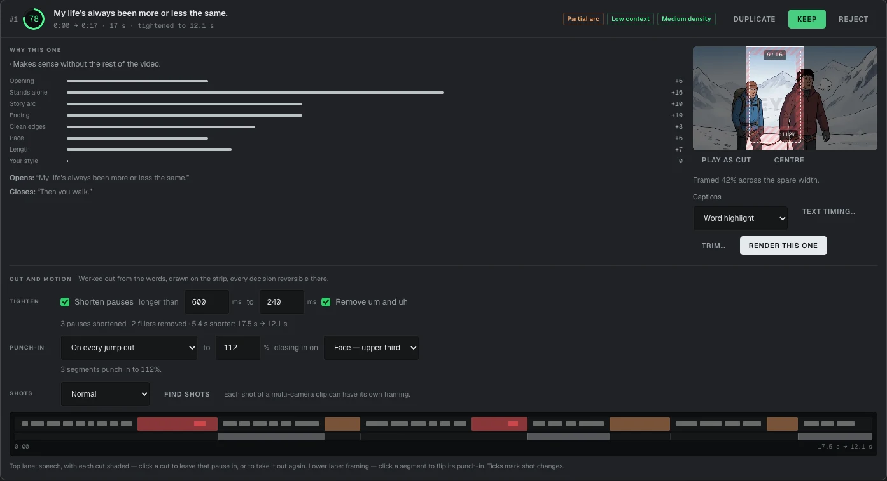
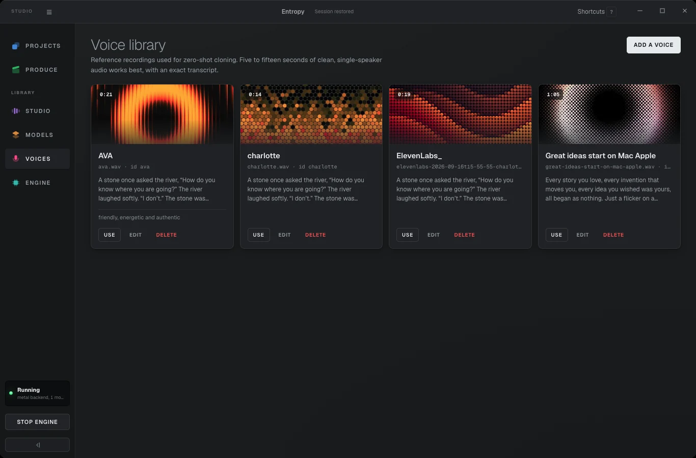
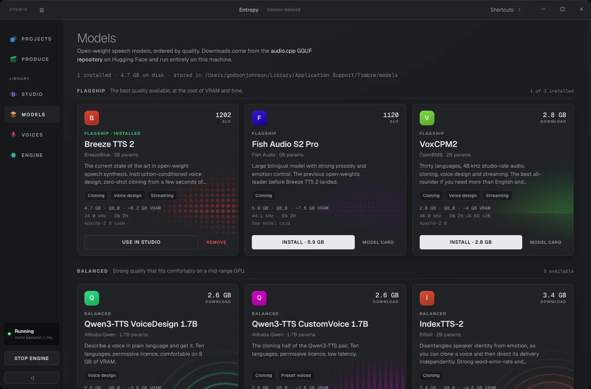

From script to finished video, without leaving your desk.
Write the script, give it a voice, cut the video, master it for each platform and pull the Shorts — in one app. The speech models run on your own computer: no per‑word billing, and nothing is uploaded.
- No per-word billing
- Nothing uploaded
- 15 open-weight models

One window · eight stages, left to right
- 01Brief
- 02Script
- 03Voice
- 04Visuals
- 05Edit
- 06Master
- 07Shorts
- 08Deliver
01 / What it is
A studio for anything with a voice in it.
Explainers, documentaries, podcasts, ads, Shorts. One window takes you from a blank page to a finished, correctly loud file — and every step of it runs on your own machine.
-
01
It speaks
Type a line and hear it read back in a voice you designed in words, cloned from a short recording, or picked from a model’s own presets.
-
02
It edits
A real multi-track timeline. Cut, trim, crossfade, duck the music under the narration, draw volume by hand, drop in transitions.
-
03
It finishes
It measures your mix the way YouTube and the broadcasters measure it, then tells you exactly what is off and fixes it on export.
02 / Workflow
Eight stages, left to right.
Timbre lays the job out as a strip along the top of the window. You can jump around, but left to right is the order the work actually happens in — and each stage hands the next one what it needs.
-
01Sets everything downstream
Brief
What the piece is, who it is for, how long it runs, and where it is going. That one choice of platform sets the canvas, the reading speed, the loudness target and the export preset.

-
02Fits the runtime
Script
Write in sections — hook, point, turn, close. Timbre counts your words against the duration you asked for and tells you, live, whether the script will fit, using your real reading speed.

-
03Directs the read
Voice
Pick the model and the voice, then direct the performance — energy, authority, intimacy, tension, warmth. Pauses come out as real silence; numbers are spoken as words.

-
04 · 05Cuts to the voice
Visuals & Edit
Plan the shots, bring in footage and stills, and cut against the narration. Split, trim, slip, slide, roll; draw a fade by dragging a corner. The music ducks under the voice on its own.

-
06Measured, not guessed
Master
Timbre measures the finished mix against the standard your platform uses, says plainly what is wrong, and fixes it on export. An optional insert rack takes EQ, compression, reverb and your own VST3 or Audio Unit plug-ins.

-
07 · 08New in 1.4
Shorts & Deliver
Timbre finds the moments that stand on their own, tightens the pauses, punches in to hide the jumps and keeps captions clear of each app’s buttons. Then it exports at the right size and loudness for everywhere you post.

03 / Voices
Five to fifteen seconds is enough.
Add a short, clean recording of one person speaking and type out exactly what they said. That is a voice. From then on it reads anything you write, and it stays on your disk — no upload, no enrolment, no account.
You can also describe a voice in plain language and let the model build one, or use the preset voices a model ships with. Timbre tells you which of the three a model supports before you download it.
Clone only voices you have permission to use. Timbre keeps the description and credit you write next to every voice for exactly this reason.

04 / Models
Pick the one your computer can actually run.
Fifteen open-weight models ship in the catalogue, ordered by quality and grouped by what they ask of your machine. Each card shows the download size, the memory it needs, the languages it speaks and its licence — before you commit.
- FlagshipThe best quality available, if you have the VRAM for it.
- BalancedStrong quality on a mid-range GPU.
- LightweightFrom 190 MB. Good on a CPU, good for drafts.
- Sound & musicEffects and instrument beds from a description.
- TranscriptionCaptions and word timings, also local.

05 / Loudness
Every platform turns your audio down.
YouTube, Spotify and the rest measure how loud your piece is and normalise it to their own target. Master too loud and they turn you down — along with the dynamics you squashed to get there. Timbre masters to the target instead.
Seven mastering profiles — documentary, podcast, advertisement, Shorts, broadcast, lecture, cinematic — decide how the mix sounds. The platform you chose in the brief decides how loud it is delivered.
06 / Why local
Your studio. Your disk. Nobody else’s servers.
- 01
Nothing is uploaded
Your script, your voice recordings and your footage stay on your disk. There is no account and no server to trust.
- 02
No meter running
Re-record a line forty times if you want. There is no per-character cost, so you can afford to get it right.
- 03
It works on a plane
Once the models are downloaded, Timbre needs no connection at all. Your studio does not stop when the wifi does.
- 04
It keeps working
Open weights on your own disk cannot be deprecated, rate-limited or repriced out from under a project you already shipped.
07 / Download
Make the next one sound finished.
Timbre is a desktop app for macOS and Windows. Download it, open it, and it sets up its own speech engine on first run. The smallest voice is 190 MB and runs on a processor; the flagship models want a graphics card with 6 GB or more.
Latest stable release
Timbre 1.4.0
Neither build is signed yet, so the first launch needs one extra click: Control-click → Open on a Mac, or More info → Run anyway on Windows. Model weights carry their own licences, shown on every card before you download — check that yours covers commercial work before you ship it.